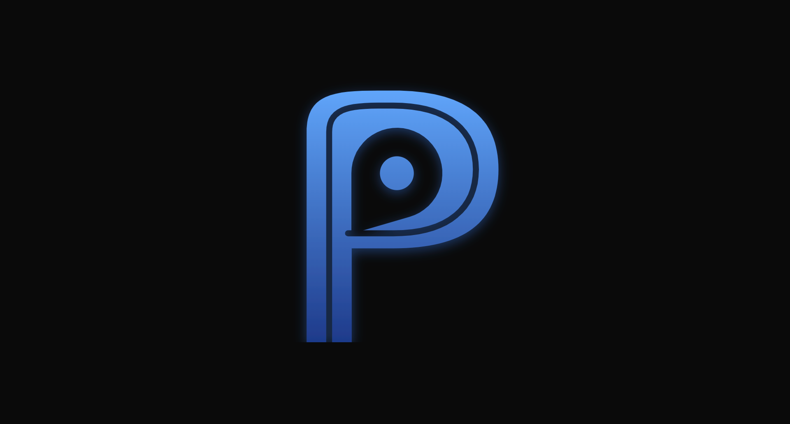

Pathfinder AI01 / 10An AI-first life event planning app — built for people who feel completely lost when a big decision lands on them.
You just got a job offer in another city. Excited, slightly terrified, no idea where to start.
You Google it. 14 tabs later, you have a Reddit thread from 2019 and a list of tasks with zero context about order or priority.
The problem isn't missing information — it's that nobody organises it for your exact situation. Students and early-career folks navigating their first move, first visa, first loan get hit hardest.
Solo project, no formal research budget. I used two sources to understand the problem space.
Solo, secondary research only, free-tier APIs. That meant every design decision had to earn its place with zero slack.
No dropdowns. You type what's happening — "I got a job in London" — and the AI reads it, identifies the event types, and builds from that. Real life rarely fits one category.
Describe the situation like you'd explain it to a friend. No structured categories required.
2–3 smart follow-ups (visa? family? joining date?) make the plan specific to you. This is the feature, not a delay.
Two rules guided these: AI shouldn't act without your permission, and you should never have to re-enter the same information twice.
Full plan preview before anything saves. It becomes your plan when you choose it — not when AI generates it.
Upload Aadhaar, passport, offer letter once. Vision AI extracts fields and pre-fills task details automatically.
The biggest drop-off happens when users leave the app and land on a confusing government portal. Two features close that gap directly.
Animated cursor overlays on real portal screenshots — 8 portals. Screenshots don't break when layouts change.
Scoped strictly to your tasks, documents, timeline, and city. No general noise — only execution help.
Most productivity apps feel cold and corporate. A planning app for stressful life events should feel calm and navigable — the user is a traveler, the app is their guide, the plan is the route.